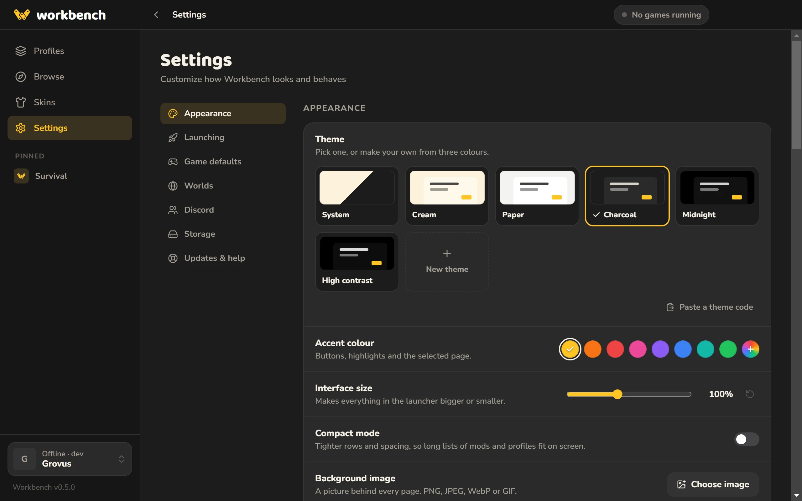

A Minecraft launcher for everyone.
Play any version, add mods in a click, and keep all your worlds and setups tidy. Free, and easy from the start.

Everything in one place
Make a profile for each way you play: plain Minecraft, a modded world with friends, a shader setup for screenshots. Each one keeps its own mods, worlds and settings, so nothing gets mixed up.

Mods in a click
Browse thousands of mods, resource packs, shaders and modpacks from Modrinth right inside the launcher. Workbench only shows what works with your version and installs anything else they need.

Help when something breaks
If two mods don’t get along, Workbench tells you before you install them. If the game crashes, it explains why in plain English and offers a fix.

Up to date, your way
Update everything at once, or keep a mod on the version you like. Workbench updates itself too.

Make it yours
Pick a theme and a colour, set your own background picture, and make everything bigger or smaller.

Questions
Windows says it’s from an unknown publisher. Is it safe?
Yes. The installer isn’t signed yet, so Windows doesn’t recognise it. Choose More info, then Run anyway. All the code is on GitHub.
Can I sign in with my Microsoft account?
Not yet. Microsoft has to approve new launchers first, and that’s on its way. Until then you can play singleplayer and on LAN.
Do I need to know anything about mods?
No. You can just press Play. If you want mods later, Workbench helps you find ones that work together.
Does it work on Mac or Linux?
Windows only for now.
Does it cost anything?
No, it’s free.